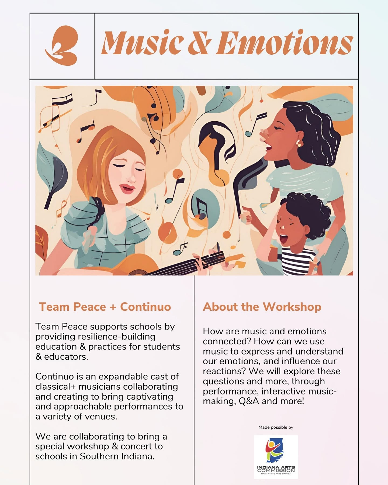

Team Peace
With Team Peace, we develop school workshops based on its mindfulness and resilience-building curriculum. Music & Emotions combined live performance, interactive music-making, and conversation to help students explore how music can express emotion and influence their reactions.